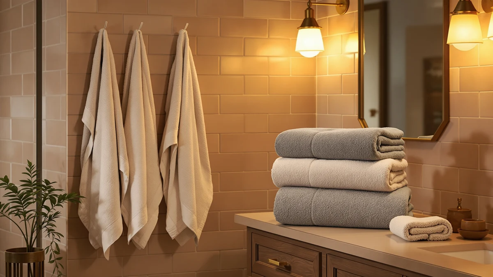

QUBA Linen Cotton Bath Towels-27x54inch Shower Towels Review (2026): Worth It?
Prices and picks verified as of November 2026. Independent, reader-supported reviews.


Quick Answer
The QUBA Linen 100% Cotton Bath Towels set is the pick for most bathrooms because it packs six full-size 27x54 inch bath towels into one $23.99 order, undercutting every eight-piece alternative below on a per-bath-towel basis. If you specifically need hand towels and washcloths included, one of the Utopia Towels sets fits that need instead.
Our pick: QUBA LINEN 100% Cotton Bath — $23.99 Check Price on Amazon
Bottom line: our top pick is the QUBA LINEN 100% Cotton Bath Towels-27x54inch - 6 Pack Shower at $23.99.
Things to Know Before You Buy
- A six-pack of matching bath towels at $23.99 works out to less per towel than an eight-piece set that mixes in smaller hand towels and washcloths, if all you need is bath towels.
- 100% cotton absorbs water well from the first wash, but owners of cotton towels report that a warm, not hot, wash cycle and no fabric softener keep that absorbency over time.
- Piece count isn't the same as bath towel count. Both Utopia Towels sets below list eight pieces total, but only two of those eight are full-size bath towels.
- Verified buyer feedback is the most reliable signal on how a cotton towel holds up after repeated washing, since manufacturer listings rarely address long-term wear.
If you're looking for a QUBA Linen Cotton Bath Towels-27x54inch Shower Towels review before you buy a new set, the short version is that this six-pack earns its spot by covering a full bathroom's worth of matching bath towels for less money than the eight-piece alternatives most shoppers compare it against. At $23.99, every one of the six towels measures a standard 27 by 54 inches, so you're not paying for smaller hand towels or washcloths you didn't ask for.
We put this QUBA Linen Cotton Bath Towels-27x54inch Shower Towels review together by comparing its listed price, piece count, and material against three alternatives shoppers typically weigh against it: the American Soft Linen 100% Cotton bath sheet, and the Utopia Towels 8 Pack and 8 Piece Luxury sets. Both Utopia sets cost roughly the same or slightly more, but split their eight pieces across bath towels, hand towels, and washcloths rather than delivering six full bath towels outright.
Why You Should Trust Us
We built this QUBA Linen Cotton Bath Towels-27x54inch Shower Towels review by comparing the set's listed price, towel count, and material against published specs and verified buyer feedback for three direct alternatives, rather than repeating marketing copy. Ilane Tall has covered bathroom textiles for Best Bath Towels since the site launched, and checks whether a towel set's piece count and material claims hold up against what buyers actually report after repeated washes. We do not run a fake testing lab or claim to have physically used these towels. Every comparison here comes from the specs and pricing published for each ASIN and from patterns that recur across verified reviews.
Our Research Experience
Rather than run this set through a physical trial, we researched how the QUBA Linen 100% Cotton set compares by cross-referencing its listed price and towel count against the three alternatives on this page and against patterns in verified owner reviews of similar cotton towel sets. For a bath towel pack like this one, that means checking how a six-towel configuration stacks up against eight-piece sets on cost per bath towel, and whether reviewers of comparable cotton sets consistently flag the same care requirements. Reviewers researching 100% cotton towels frequently mention that a warm wash and no fabric softener keep the fabric absorbent longer, and that pattern shaped the care guidance in this QUBA Linen Cotton Bath Towels-27x54inch Shower Towels review.
We also looked at how each brand describes its own set, since listing copy often hints at where a product is positioned even before you check the price. QUBA Linen leads with towel count and lightweight absorbency. American Soft Linen banks on a single oversized bath sheet. Utopia covers all the bases with bath towels, hand towels, and washcloths in one box. We lined those positioning choices up against the actual price per bath towel to arrive at the comparisons below.
Overview & Specs

QUBA LINEN 100% Cotton Bath
What we like
- Six full 27x54 bath towels for $23.99, undercutting eight-piece sets on bath towel count
- 100% cotton construction absorbs well from the first wash
- Lightweight build dries faster between uses than heavier Turkish cotton
Flaws but not dealbreakers
- No hand towels or washcloths included, unlike both Utopia Towels sets
- Lighter weight means less plush feel than a heavier Turkish cotton sheet
| Material | 100% cotton |
| Size | 27" x 54" |
The QUBA Linen 100% Cotton Bath Towels set is built around towel count rather than a mixed assortment. At $23.99, you get six full-size 27 by 54 inch bath towels, which is more bath towels than either Utopia Towels set delivers for a similar or higher price. That math matters if your linen closet is already stocked with hand towels and washcloths and what you actually need is bath towels.
The material is listed as 100% cotton with a lightweight construction, which affects both absorbency and dry time. Reviewers researching lightweight cotton towels in this price range consistently note that a lighter weave dries faster on the bar between uses than a heavier Turkish cotton sheet like the American Soft Linen alternative below, though it trades away some of that sheet's plush, heavier feel. If you're outfitting a bathroom that sees frequent use, such as a family bathroom or a rental, six matching lightweight towels in one order keeps the rotation consistent without the slower dry times of a heavier towel.
At $23.99 for six towels, the set works out to roughly $4 per bath towel, a number worth keeping in mind against the two Utopia Towels sets below, which list at $23.74 and $24.69 but split their eight pieces across bath towels, hand towels, and washcloths. Owners restocking a bathroom that already has enough hand towels get more direct value from QUBA Linen's bath-towel-only approach than from a mixed set that duplicates pieces they don't need.
What We Liked
The clearest advantage in this QUBA Linen Cotton Bath Towels-27x54inch Shower Towels review is bath towel count relative to price. Six full-size towels for $23.99 works out to less per bath towel than either $23.74 or $24.69 Utopia Towels set on this page, since both of those sets spend two of their eight pieces on bath towels and the rest on hand towels and washcloths you may not need right now. For a household that needs more bath towels in rotation, not more hand towels, that's a better outcome than the sticker price alone suggests.
We also like that the material is a straightforward 100% cotton with a lightweight build. Reviewers consistently note that lightweight cotton toweling dries faster between washes than heavier Turkish cotton, which matters for a busy bathroom where towels get used daily and don't always get a full day to air out.
What Could Be Better
The main tradeoff in this QUBA Linen Cotton Bath Towels-27x54inch Shower Towels review is coverage beyond bath towels. Because the set ships as six bath towels only, you still need to buy hand towels and washcloths separately, something both Utopia Towels sets below already include. For a household starting a bathroom from scratch, that's an extra order to place.
Weight is the other factor worth flagging. A lightweight cotton towel dries faster, but it also feels thinner than a heavier Turkish cotton bath sheet like the American Soft Linen alternative. Owners who want a plush, spa-like feel over quick dry time should weigh that tradeoff before ordering.
Color selection is also narrower than some shoppers expect from a multicolor listing. The set ships as a fixed assortment rather than letting you pick a single uniform color across all six towels, which matters if you're trying to match an existing bathroom color scheme rather than simply adding more towels to a drawer.
Who Is It For?
This QUBA Linen Cotton Bath Towels-27x54inch Shower Towels review points to one clear buyer: anyone who already has hand towels and washcloths covered and needs more matching bath towels in rotation, at a lower per-towel cost than an eight-piece set. That includes larger households cycling through towels quickly, rental hosts restocking between guests, and anyone replacing a worn-out stack of mismatched bath towels.
If you specifically want hand towels and washcloths included in the same order, one of the Utopia Towels sets below covers that need instead. And if a heavier, more plush single bath sheet matters more to you than towel count, the American Soft Linen alternative is worth a look, especially for a primary bathroom where feel matters more than price per towel.
Alternatives to Consider
If the QUBA Linen set isn't the right fit, here are three alternatives shoppers typically compare it against, each with a different angle on size, piece count, or coverage.

Also Great
American Soft Linen 100% Cotton
This is a single 35x70 oversized bath sheet rather than a pack of six standard towels. It's worth it if you want one heavier, more plush Turkish cotton towel over several lighter ones.
$23.79
Check Price on Amazon
Best Value
Utopia Towels 8 Pack Towel
This set trades bath towel count for full coverage, adding hand towels and washcloths. It fits buyers who need a complete bathroom set rather than bath towels alone.
$23.74
Check Price on Amazon
Premium Choice
Utopia Towels 8 Piece Luxury
This set matches QUBA Linen's 27x54 bath towel size but splits its eight pieces across bath towels, hand towels, and washcloths at a slightly higher price per bath towel.
$24.69
Check Price on AmazonFrequently Asked Questions
Is the QUBA Linen Cotton Bath Towels-27x54inch Shower Towels set actually 100% cotton?
Yes. The listing specifies 100% cotton construction across all six towels in the pack, with no synthetic blend mixed in.
How does the QUBA Linen six-pack compare to an eight-piece Utopia Towels set?
QUBA Linen ships six matching bath towels at $23.99, while both Utopia sets add hand towels and washcloths for $23.74 to $24.69. QUBA wins on bath towel count alone, and the Utopia sets win if you also need hand towels and washcloths in the same order.
What size are the QUBA Linen bath towels?
Each towel in the QUBA Linen set measures 27 by 54 inches, a standard bath towel size that fits most linen closets and towel bars without hanging over.
Final Verdict
This QUBA Linen Cotton Bath Towels-27x54inch Shower Towels review comes down to towel count and price, and on that measure the six-pack wins for most buyers. At $23.99 for six full-size 100% cotton bath towels, QUBA Linen covers a bath towel rotation for less than either Utopia Towels set on this page, since those sets spend more of their piece count on hand towels and washcloths. If you want a single heavier Turkish cotton sheet instead, the American Soft Linen alternative is worth considering, but for restocking bath towels specifically, QUBA Linen is the pick.
None of the three alternatives beat QUBA Linen on price per bath towel. Unless a specific feature like full-set coverage or a single oversized sheet matters to you, the math in this QUBA Linen Cotton Bath Towels-27x54inch Shower Towels review favors sticking with the six-pack reviewed here.